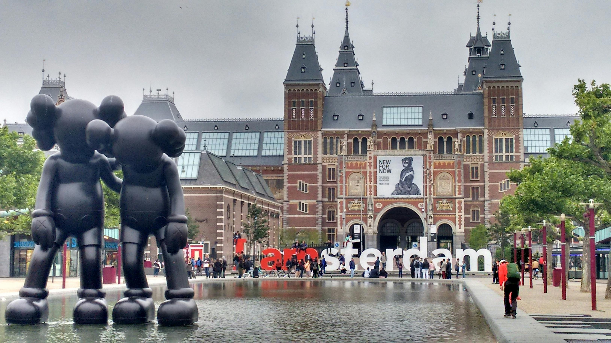
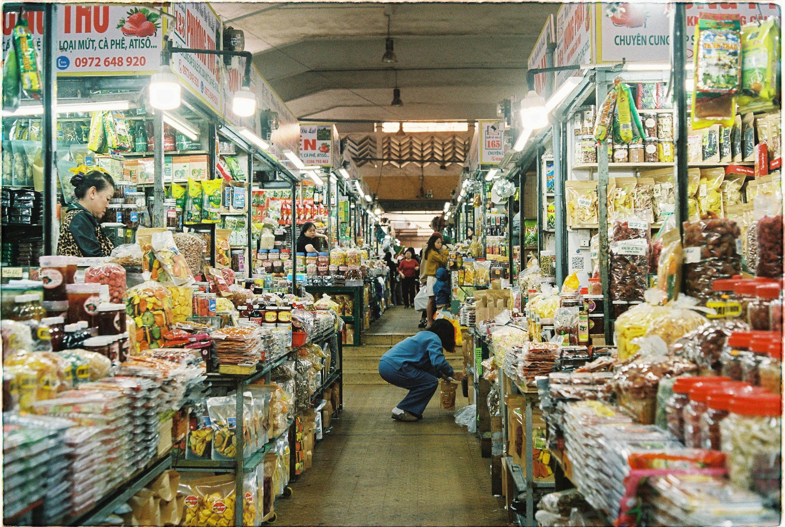
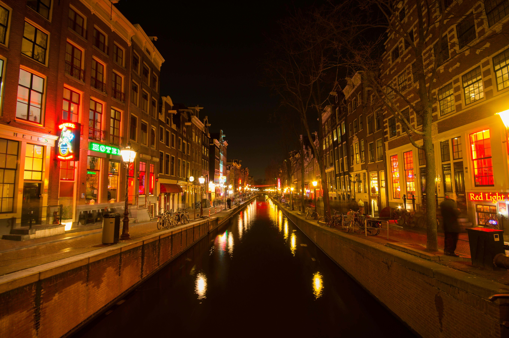

Подорож до Амстердама
Відкрийте для себе чарівність Амстердама. Насолоджуйтесь каналами, велосипедними доріжками та багатою культурою.
Забронювати подорож
Основні визначні пам'ятки
- Канали Амстердама: Відкрийте для себе романтичні канали міста.
- Рейксмузей: Відомий музей мистецтва та історії.
- Музей Ван Гога: Найбільша колекція творів Ван Гога.
- Будинок Анни Франк: Історичний будинок-музей.

Вондельпарк
Насолоджуйтесь прогулянками, пікніками та велосипедними поїздками у найбільшому парку Амстердама.

Кулінарні відкриття
Спробуйте голландські делікатеси, від оселедця до стропвафель, та насолоджуйтесь різноманітною кухнею у численних ресторанах.

Музей Ван Гога
Відвідайте найбільшу у світі колекцію творів Ван Гога та дізнайтеся більше про життя художника.

Квартал Червоних Ліхтарів
Досліджуйте знамениту частину міста з її нічними клубами, барами та історичними будівлями.